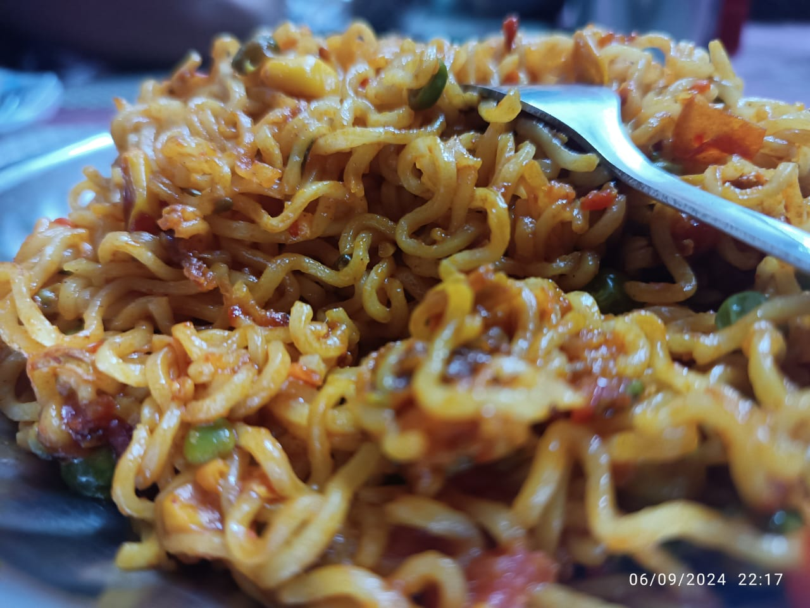
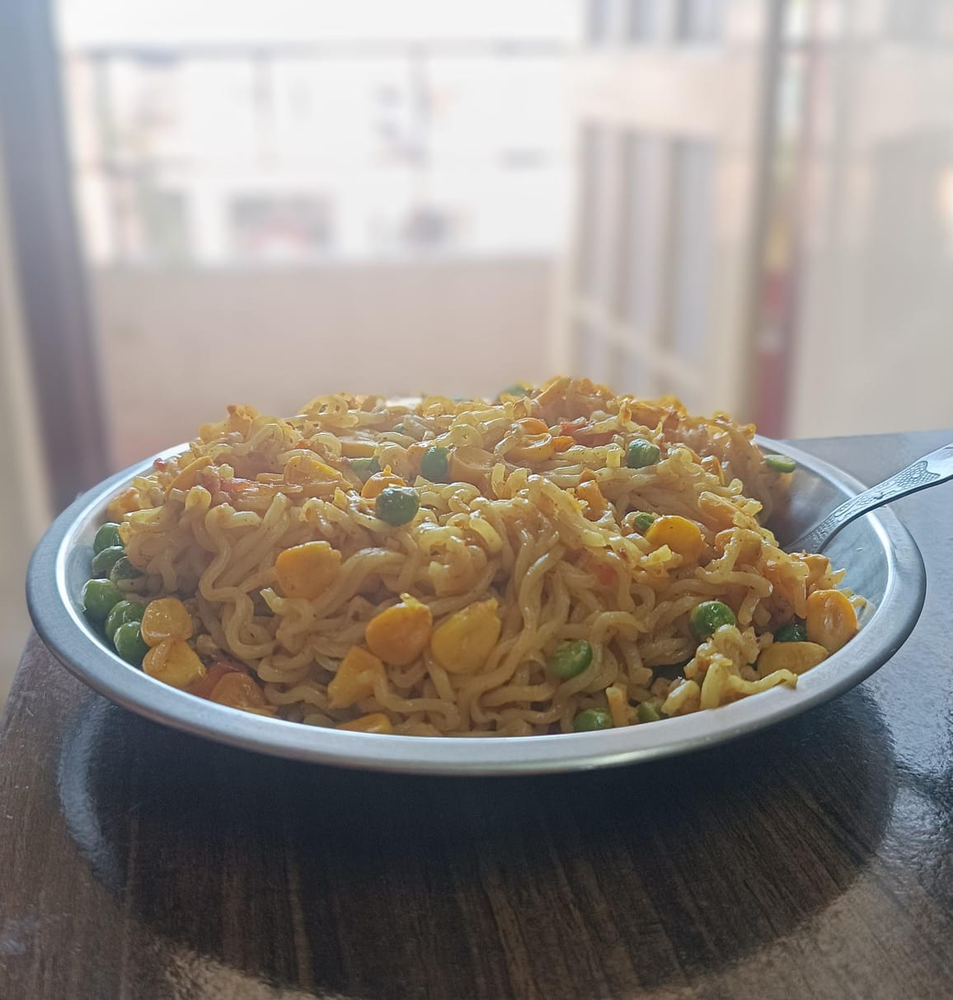
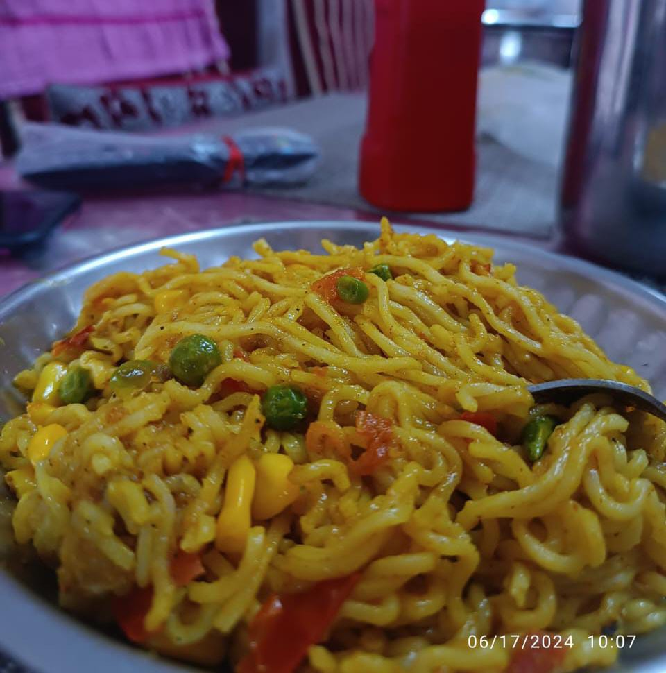

Maggi



Decription
To make Maggi, First boil 2 cups of water in a pan. Add the Maggi noodles and the few drops of cooking oil to the boiling water. Let it cook for 2 minutes.After that drain the water and pass with cool water with few drops of cooking oil. Add the peas, tomatoes, Onion, Chilly and sweetcorn to the pan with cooking oil. Let it cook for another 2 minutes and mix the boiled maggi and stir it until all the maggi is cooked. Serve hot.
Ingredients
- Maggi Noodles
- Peas
- Tomato
- Onion
- Chilly
- Sweetcorn
- Cooking Oil
Steps
- Boil 2 cups of water in a pan
- Add the Maggi noodles and the few drops of cooking oil to the boiling water
- Let it cook for 2 minutes
- Drain the water and pass with cool water with few drops of cooking oil
- Add the peas, tomatoes, Onion, Chilly and sweetcorn to the pan with cooking oil
- Let it cook for another 2 minutes and mix the boiled maggi and stir it until all the maggi is cooked
- Serve hot